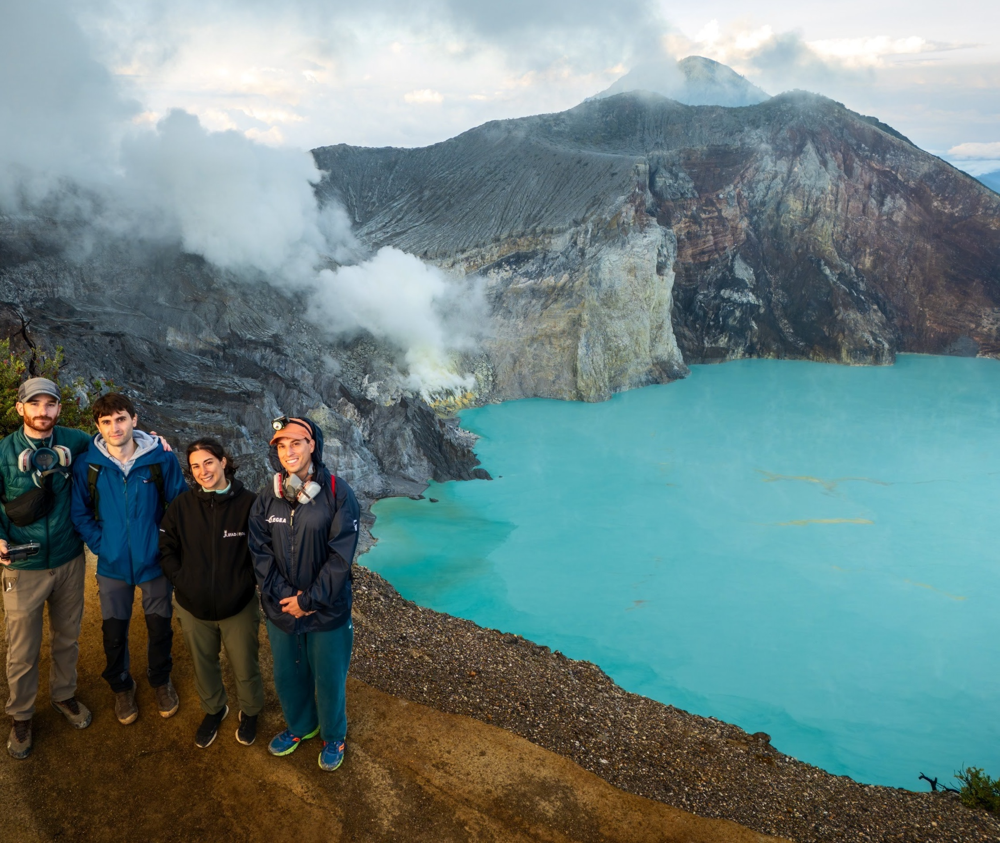
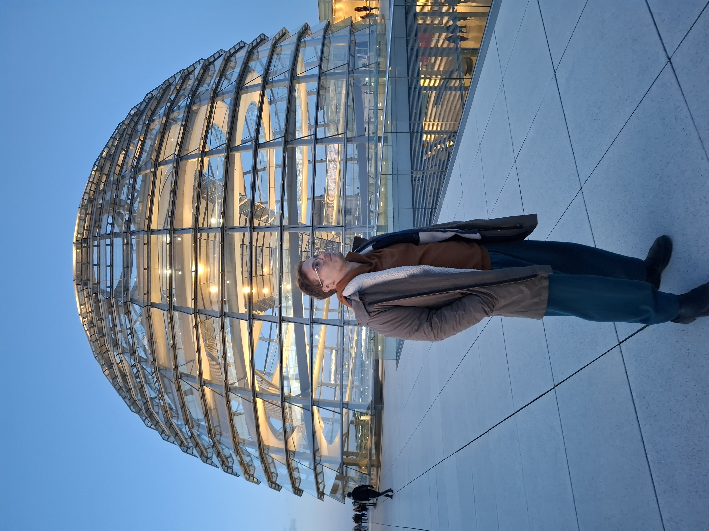

RAG · LLM · Research
Late & Contextual RAG
Evaluating modern chunking for RAG — Anthropic's Contextual Retrieval and Jina's Late Chunking. Basis of a paper accepted at KEIR@ECIR 2025 (Springer).

AI Engineer · Computer Engineer
I build technologies that drive real-world impact — from large language models and semantic retrieval to computer vision and deep learning. MSc in Artificial Intelligence, University of Bologna.
I'm passionate about developing technologies that drive real-world impact. My background in Computer Engineering gave me strong problem-solving abilities and a solid mathematical foundation; during my MSc in Artificial Intelligence at the University of Bologna I deepened my expertise across the core AI disciplines while working hands-on with cutting-edge technologies.
I enjoy taking ideas from research to production — designing retrieval systems, training and evaluating models, and running large-scale experiments on HPC clusters. I'm eager to learn, grow, and take on new challenges.

Contributed to a new AI-powered product initiative focused on scalable semantic retrieval under strict enterprise constraints. After identifying structural limits in the existing lexical-first search, I designed a hybrid lexical–semantic retrieval component centered on semantic reranking — enabling deep intent understanding without migrating the existing infrastructure. The system, built for the Lens product line (with patent potential), now underpins key aspects of its semantic search.
Worked as a consultant software developer and Verification & Validation engineer, contributing to client software development and quality-assurance processes.
A selection of my open-source projects across LLMs, retrieval, computer vision and the mathematical foundations of machine learning. Full list on GitHub.
Evaluating modern chunking for RAG — Anthropic's Contextual Retrieval and Jina's Late Chunking. Basis of a paper accepted at KEIR@ECIR 2025 (Springer).
Semantic segmentation and anomaly detection for autonomous driving: PSPNet, DeepLabV3+ and ERFNet variants, metric-learning heads and PatchCore-style OoD detection.
Probing deterministic planning robustness of Llama 3.3 70B on PDDL tasks via a planner–validator loop, with confidence-estimation meta-networks. Run on Leonardo HPC (SLURM).
Computer-vision pipeline for recognising and localising products from images.
A Transformer that reconstructs the original English sentence from a random permutation of its words — leveraging position-independent token correlations.
From-scratch implementations: MNIST classification via SVD, PCA clustering, (stochastic) gradient descent, logistic regression, MLE and MAP for polynomial regression.
A double-blind paper evaluating advanced techniques to enhance RAG pipelines — Anthropic's Contextual Retrieval (Sep 2024) and Jina's Late Chunking (Aug 2024) — submitted to and accepted at the KEIR 2025 workshop within the European Conference on Information Retrieval. Accepted for publication on Springer.
Core AI disciplines: machine learning, deep learning, computer vision, NLP, big data & text mining, combinatorial optimization and decision making.
Foundations in computer engineering, signals & systems, control systems and telecommunications.